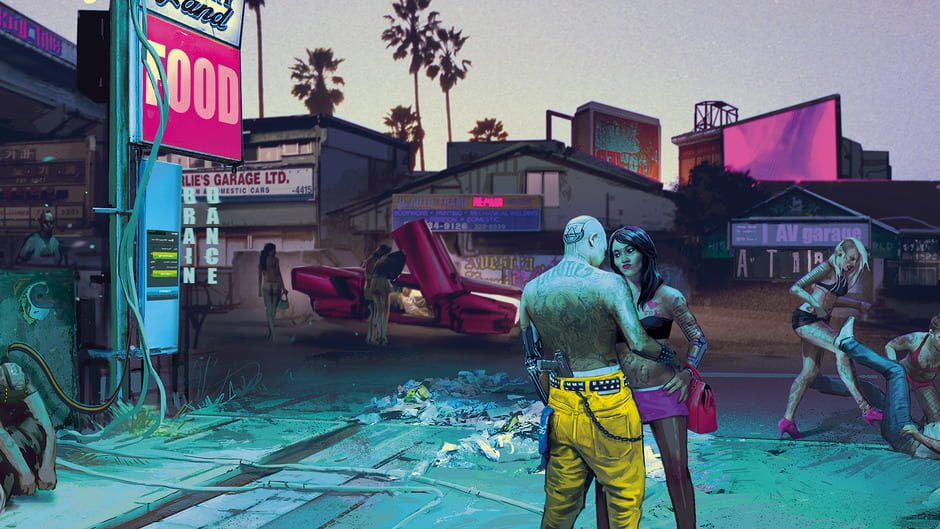

Après la claque de la découverte de son gameplay lors de l’E3 2018, nous étions prêts à tendre l’autre joue pour une nouvelle baffe nommée Cyberpunk 2077 lors de cette édition 2019 du salon. Si la longue démonstration de l'année dernière était chargée d’introduire l’univers du jeu et les bases de son gameplay, CD Projekt Red prend cette fois-ci le temps d’entrer dans les détails au cours d’une nouvelle session de jeu d’une cinquantaine de minutes. Cyberpunk 2077 est désormais plus qu’un rêve lointain de joueur, il est une réalité à la sortie calée à avril 2020. Un jeu de rôle désormais à portée de main, une plongée urbaine saisissante aux mécaniques aussi riches que prometteuses. C’est les yeux pleins d’étoiles et avec la ferme envie de pouvoir, nous aussi, arpenter les rues de Night City que nous ressortons de cette nouvelle démonstration de ce qui s’annonce être la nouvelle référence du genre.
V(ous)

Cyberpunk 2077 vous laisse une très grande liberté lors de la création du personnage Ici, pas de classes prédéterminées, le jeu vous invite cependant à attribuer des “points” à diverses caractéristiques, on retrouve ainsi des attributs assez classiques tels que la force, l’intelligence, les réflexes ou la maitrise de la technologie, mais aussi le “cool” qui représente en quelque sorte la “street cred” de Night city. L’absence de classe prédéfinie permet ainsi une grande liberté de build pour votre personnage, on pourra ainsi aussi facilement jouer un hacker spécialisé au corps à corps qu’ un sniper tendance artificier. Ces différents builds changeront de plus la façon dont vous aborderez la résolution des quêtes, un personnage spécialisé en hack pourra par exemple surcharger à distance un panneau publicitaire, entrainant ainsi sa chute sur un malheureux groupe d’ennemi venu simplement chercher un peu d’ombre. Un personnage plus axé sur le combat et la force brute pourra quand à lui arracher la mitraillette d’une tourelle automatique pour retourner sa puissance de feu contre ceux qu’elle était supposé protéger. Notons qu’à l’instar d’un Deus Ex, les développeurs viennent de confirmer la possibilité de finir le jeu sans tuer le moindre ennemi, ce qui saura réjouir les plus pacifiques d’entre nous.
...Contre le reste du monde
Se faire le parangon du pacifisme dans une ville aussi violente que Night City semble un peu relever de l’antinomie tant les différents aspects que nous avons vu de la ville ont semblé reproduire un environnement violent où les lois relèvent davantages du Far-West que d’une promenade de santé. Composée de nombreux quartiers, tous possédant une atmosphère unique, Night City ressemble à ces villes tentaculaires où soit les gangs soit les corporations ont pris le pouvoir. Et le moins que l’on puisse dire c’est que cela fonctionne ! Ainsi dans le quartier de Pacifica, pensé à l’origine comme un énorme complexe touristique, l’ambiance n’est plus à la fête depuis que les promoteurs ont abandonné les chantiers en l’état et que les gangs locaux en ont fait leurs QG. Ici les Voodoo Boys, gang composé d’Haïtiens sont en guerre ouverte contre une faction rivale, les Animals pour le contrôle du territoire… et bien entendu vous aurez votre mot à dire dans tout cela. Des villes, dans des villes, dans des villes, voilà ce que nous propose Cyberpunk 2077, qui semble maitriser comme personne la verticalité de son environnement. En résumé, on a hâte, très hâte. Après le chef d’oeuvre vidéoludique qu’a été la saga The Witcher, Cd projekt semble avoir encore mis la barre très haute. Dans mon souvenir, c’est la première fois depuis Fable premier du nom qu’un jeu semble promettre autant de merveilles, de choix, d’interactions et de rejouabilité ; ne reste plus à ésperer qu’à l’inverse de la team Molyneux, CD projekt les tiendra réellement ;) ! Pour le savoir, rendez vous en avril 2020 !